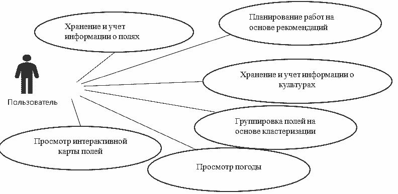

Ляшенко Ю.А., Савкова Е.О. Разработка функциональной структуры системы цифрового учета в малом аграрном бизнесе. В статье рассматриваются актуальные проблемы учета информации в малом сельскохозяйственном бизнесе. На основе анализа существующих программных приложений была разработана функциональная структура информационной системы, которая обеспечивает хранение, анализ и управление данными о полях, посевах и погодных условиях. Предлагаемая схема вариантов использования включает в себя хранение информации, работу с интерактивными картами, разработку рекомендаций по управлению посевами и планирование будущей работы сельскохозяйственного предприятия.
информационная система, учет сельскохозяйственных данных, планирование сельскохозяйственных работ, интерактивная карта полей, оптимизация сельскохозяйственных процессов
Lyashenko J.A., Savkova E.O. Ddevelopment of a functional structure for a digital accounting system in small agricultural business. The article discusses the current problems of accounting for information in small agricultural business. Based on the analysis of existing software applications, a functional structure an information system has been developed that provides storage, analysis and management data on fields, crops and weather conditions. The proposed scheme of use cases includes storing information, working with interactive maps, developing recommendations for sowing management and planning the future work an agricultural enterprise.
information system, agricultural data management, agricultural work planning, interactive field map, optimization of agricultural processes
До сих пор учет данных для небольших предприятий аграрной отрасли, занимающихся выращиванием культур, в большинстве случаев осуществляется вручную, используя традиционные методы и инструменты. Это включает в себя следующие аспекты:
Небольшие предприятия в некоторых случаях могут предпочитать традиционные методы ведения учёта из-за ограниченных ресурсов или из-за особенностей их специфики, которая может требовать более простых и доступных способов управления данными. Это обусловлено отсутствием доступа к современным технологиям, включая отсутствие удобной системы для учета данных и прогнозирования будущих показателей.
Данная проблема очень мало освещалась в научной литературе.
Поэтому, целью данной статьи является анализ текущего состояния цифрового учета в малом аграрном бизнесе и разработка функциональной структуры информационной системы, обеспечивающей работу со всеми необходимыми данными в этой сфере. Основное внимание уделяется тому, что до сих пор многие небольшие предприятия в аграрной отрасли продолжают вести учет данных вручную, используя традиционные методы. Статья направлена на выявление проблем, связанных с этим подходом, а также на анализ возможностей и перспектив цифровизации этого процесса в контексте малого аграрного бизнеса.
На данный момент существует не так много готовых информационных систем, которые направлены на помощь предпринимателям в учете сельскохозяйственной деятельности: Agrobase, Agroresult, FarmDok, Caynax Gardener, Fermable, 365Crop, Protector Scouting, Filedmargin, FarmerJoe, AgroIntegratorApp и OneSoil Scouting. Из них функционируют на территории Российской Федерации и поддерживают русский язык только 2 последних.
В контексте имеющихся приложений подчеркивается необходимость разработки более эффективного и удобного инструмента для аграриев, который будет соответствовать их потребностям и станет востребованным на рынке. Этот новый инструмент должен представлять собой комплексную систему, способную обеспечивать хранение, обработку и анализ информации о полях, культурах и погодных условиях, а также предоставлять рекомендации на основе исторических данных.

Диаграмма вариантов использования, представленная на рис. 1, иллюстрирует основные функции системы, которые доступны пользователю – главному активному лицу, использующему систему для учета и управления данными в сельском хозяйстве:
Разработка системы включает в себя создание удобного интерфейса, позволяющего пользователю легко вносить, просматривать и анализировать данные о полях, культурах, погоде, урожайности и других факторах, влияющих на сельскохозяйственную деятельность.
Современное сельское хозяйство сталкивается с рядом трудностей, включая изменение климата, увеличение спроса на продукты питания и необходимость повышения эффективности производства. В условиях такой динамичной среды для сельскохозяйственных предпринимателей становится критически важным обладать надежными инструментами для учета и управления данными о своих полях и культурах.
Сегодня для учета данных в малом аграрном бизнесе распространенными практиками являются такие привычные методы, как ведение записей в блокнотах или журналах. Но с развитием цифровых технологий появляются новые возможности для упрощения этого процесса.
На сегодняшний день имеется лишь ограниченный выбор приложений, предназначенных для поддержки аграриев в ведении учета и управлении сельскохозяйственной деятельностью. Выполненный в статье анализ двух таких приложений, действующих на территории Российской Федерации и поддерживающих русский язык — OneSoil Scouting и AgroIntegratorApp — позволил выявить как их преимущества, так и недостатки. В результате возникает потребность в разработке более удобного и функционального инструмента для аграриев. Такая программная система должна обеспечивать хранение, обработку и анализ информации о полях и культурах, а также предоставлять рекомендации, опираясь на исторические данные и актуальную информацию о погоде. Ее функционал должен охватывать ведение учета о полях и культурах, проведение анализа и планирование, интеграцию с другими системами и обновление данных о погоде.
Интеграция современных технологий и программных решений позволит аграриям собирать, хранить и анализировать данные о своих полях и культурах более эффективно. Это дает возможность не только повысить производительность и урожайность, но и принимать более обоснованные решения в области управления земледелием.
В результате, сельскохозяйственные предприниматели могут не только повысить свою эффективность, но и сделать свой бизнес более устойчивым к переменам во внешней среде.
Таким образом, разработка такой системы представляет собой перспективное направление, которое может значительно упростить и улучшить учет сельскохозяйственной деятельности для предпринимателей в этой области.